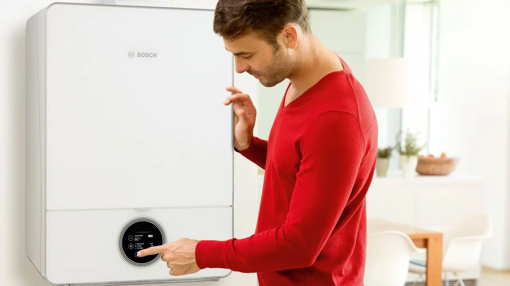

|
Gardening tools
Create the garden of your dreams with our wide range of innovative tools and accessories. Garden tools are your essential garden, lawn and hedge care assistants. The right garden tools and other gardening tools will make your work more comfortable. |
|
|
Heating and hot water
Bosch's smart and efficient heating and hot water solutions are based on the latest technology and feature internet connectivity, ease of use and attractive design. They are solutions for energy-efficient and environmentally friendly systems, whether they are floor-standing or wall-mounted boilers, heat pumps, solar thermal systems or solid fuel boilers. |
 |
|
Household appliances
Bosch specialises in providing intelligent, reliable and attractive home appliance solutions that make life easier every day. This underlines the company's commitment to creating technology that serves a basic purpose: our solutions are where they are needed, they harmonise with the home environment, acting as a humble helper in household chores. |